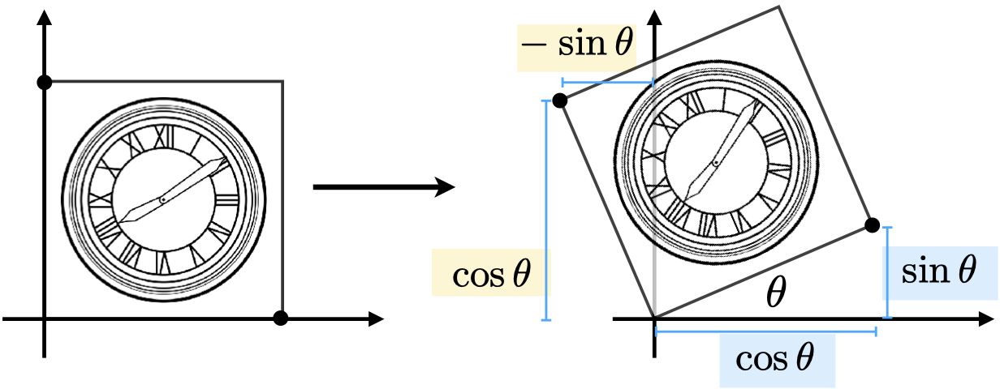
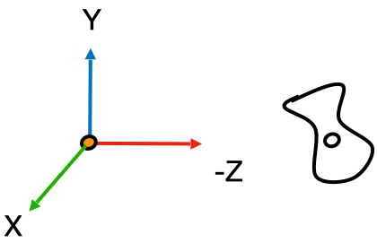
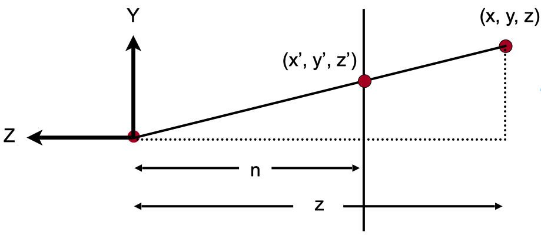

Games101 笔记 —— 变换
文章目录
简介
本文《GAMES101-现代计算机图形学入门》系列教程的课程笔记，仅用于个人学习使用。
二维变换
二维变换是指二维在平面中进行的变换，一个二维的点经过变换后会得到变成另一个点（一个新的坐标）。
缩放
缩放是指点 $ (x_0, y_0) $ 经过缩放因子 $ S(x, y) $ 变换之后形成新的点 $ (x_1, y_1) $，它们间的关系是：
$$ x_1 = S_x \times x_0 $$
$$ y_1 = S_y \times y_0 $$
写成矩阵的形式就是：
$$ \begin{bmatrix} x_1 \\ y_1 \end{bmatrix} = \begin{bmatrix} S_x & 0 \\ 0 & S_y \end{bmatrix} \begin{bmatrix} x_0 \\ y_0 \end{bmatrix} $$
镜像是一个非常常见的缩放变换，只需要把缩放因子变成负数即可实现某个方向的镜像。如当缩放因子是 $ (-1, 1) $ 时，经过缩放变换之后的图形就是以 Y 轴为对称轴的镜像。
旋转

旋转是指绕一点作为旋转中心，旋转 $ \theta $ 角度的变换。 如上图所示，该正方形绕原点旋转了 $ \theta $ 角度。假设正方形的边长为 1，那么我们很容易可以得到如下的关系：
$$ \begin{bmatrix} x_1 \\ y_1 \end{bmatrix} = \begin{bmatrix} A & B \\ C & D \end{bmatrix} \begin{bmatrix} x_0 \\ y_0 \end{bmatrix} $$
对于右下角的点，变换前的坐标是 $ (1, 0) $，变换后的坐标是 $ (cos \theta, sin \theta) $， 我们可以得到如下的关系：
$$ \begin{bmatrix} cos \theta \\ sin \theta \end{bmatrix} = \begin{bmatrix} A & B \\ C & D \end{bmatrix} \begin{bmatrix} 1 \\ 0 \end{bmatrix} $$
$$ cos \theta = A \times 1 + B \times 0 = A $$
$$ sin \theta = C \times 1 + D \times 0 = C $$
同理，对于左上角的点，变换前的坐标为 $ (0, 1) $，变换后的坐标为 $ (-sin \theta, cos \theta) $，我们同样可以得到如下的关系：
$$ \begin{bmatrix} -sin \theta \\ cos \theta \end{bmatrix} = \begin{bmatrix} A & B \\ C & D \end{bmatrix} \begin{bmatrix} 0 \\ 1 \end{bmatrix} $$
$$ -sin \theta = A \times 0 + B \times 1 = B $$
$$ cos \theta = C \times 0 + D \times 1 = D $$
这样我们就得到了旋转矩阵：
$$ R_\theta = \begin{bmatrix} cos \theta & -sin \theta \\ sin \theta & cos \theta \end{bmatrix} $$
线性变换
通过上面的例子我们可以发现，缩放和旋转都能以线性变换的形式来表示，即：
$$ x_1 = ax_0 + by_0 $$
$$ y_1 = cx_0 + dy_0 $$
以矩阵的形式来表示即：
$$ \begin{bmatrix} x_1 \\ y_1 \end{bmatrix} = \begin{bmatrix} A & B \\ C & D \end{bmatrix} \begin{bmatrix} x_0 \\ y_0 \end{bmatrix} $$
如果变换可以通过以矩阵M 与点相乘然后得到一个新的点的话，那么这种变换就可以称为是线性变换。
平移
平移就是把 $ (x, y) $ 移动一段距离 $ (T_x, T_y) $ 然后得到一个新的坐标，即：
$$ x_1 = x_0 + T_x $$
$$ y_1 = y_0 + T_y $$
齐次坐标
观察平移的公式后可以发现，我们不能像缩放和旋转那样写出一个类似的平移矩阵。我们必须把带有平移的变换写成如下的形式：
$$ \begin{bmatrix} x_1 \\ y_1 \end{bmatrix} = \begin{bmatrix} A & B \\ C & D \end{bmatrix} \begin{bmatrix} x_0 \\ y_0 \end{bmatrix} + \begin{bmatrix} T_x \\ T_y \end{bmatrix} $$
我们希望有一个工具来统一所有变换，这个工具就是 —— 齐次坐标。
齐次坐标是再给点、向量增加一个 w 维度：
- 2D 点： $ (x, y, 1) $
- 2D 向量： $ (x, y, 0) $
当点、向量增加一个 w 纬度之后，我们就可以把上述带有平移的变换写成如下的形式：
$$ \begin{bmatrix} x_1 \\ y_1 \\ w_1 \end{bmatrix} = \begin{bmatrix} A & B & T_x \\ C & D & T_y \\ 0 & 0 & 1 \end{bmatrix} \begin{bmatrix} x_0 \\ y_0 \\ w_0 \end{bmatrix} $$
因此，在齐次坐标下，我们就可以用一个矩阵来同时表示平移、旋转、缩放三种变换了。
并且，由于向量具有平移不变性，因此 w 为 0 的时候刚好能保证平移矩阵与向量相乘时，w 分量依然保持 0，如：
$$ \begin{bmatrix} x_1 \\ y_1 \\ w_1 \end{bmatrix} = \begin{bmatrix} 1 & 0 & T_x \\ 0 & 1 & T_y \\ 0 & 0 & 1 \end{bmatrix} \begin{bmatrix} x_0 \\ y_0 \\ 0 \end{bmatrix} = \begin{bmatrix} x_0 + T_x \\ y_0 + T_y \\ 0 \end{bmatrix} $$
另外，对于 w 分量，还有些相关的结论：
- 向量 + 向量 = 向量
- 因为 $ w_1 + w_2 = 0 $
- 点 - 点 = 向量
- 因为 $ w_1 - w_2 = 0 $
- 点 + 向量 = 点
- 因为 $ w_1 + w_2 = 1 $
- 点 + 点 = 这两点的中点
- 因为 $ w_1 + w_2 = 2 $，在齐次坐标下，点的 w 分量为 1，所以结果要除以 2，得到的结果正是两点的中点位置
逆变换

逆变换是指把已应用的变换还原的变换，在数学上是指变换矩阵的逆矩阵 $ M^{-1} $。
仿射变换
$$ 仿射变换 = 线性变换 + 平移 $$
$$ \begin{bmatrix} x_1 \\ y_1 \end{bmatrix} = \begin{bmatrix} A & B \\ C & D \end{bmatrix} \begin{bmatrix} x_0 \\ y_0 \end{bmatrix} + \begin{bmatrix} T_x \\ T_y \end{bmatrix} $$
其对应的齐次坐标的形式为：
$$ \begin{bmatrix} x_1 \\ y_1 \\ 1 \end{bmatrix} = \begin{bmatrix} A & B & T_x \\ C & D & T_y \\ 0 & 0 & 1 \end{bmatrix} \begin{bmatrix} x_0 \\ y_0 \\ 1 \end{bmatrix} $$
相对于仿射变换，齐次坐标有如下优点：
- 可以用一个矩阵来表示平移、旋转、缩放三种变换。
- 逆变换可以通过逆矩阵来表示。
我们可以把平移、旋转、缩放三种变换分别以齐次坐标的形式表示：
$$ T_{(x, y)} = \begin{bmatrix} 0 & 0 & T_x \\ 0 & 0 & T_y \\ 0 & 0 & 1 \end{bmatrix} $$
$$ R_{(\theta)} = \begin{bmatrix} cos \theta & -sin \theta & 0 \\ sin \theta & cos \theta & 0 \\ 0 & 0 & 1 \end{bmatrix} $$
$$ S_{(x, y)} = \begin{bmatrix} S_x & 0 & 0 \\ 0 & S_y & 0 \\ 0 & 0 & 1 \end{bmatrix} $$
在仿射变换下，变换的先后顺序是先进行线性变换，然后再进行平移变换。
组合变换
矩阵乘法没有交换律，所以两种变换是不能调换顺序的。 即先平移再旋转并不等于先旋转再平移的结果。因此，应用变换的顺序很重要。
而在应用变换的时候，是根据从右往左的顺序来进行的。
$$ T \cdot R \cdot \begin{bmatrix} x \\ y \\ 1 \end{bmatrix} $$
上面这个变换表示先进行旋转，然后再进行平移。
矩阵乘法满足结合律，因此有：
$$ A_n( \cdots A_2( A_1 \cdot \begin{bmatrix} x \\ y \\ 1 \end{bmatrix} ) = A_n \cdots A_2 \cdot A_1 \cdot \begin{bmatrix} x \\ y \\ 1 \end{bmatrix} $$
观察右边的式子，我们可以预先计算 $ T = A_n \cdots A_2 \cdot A_1 $，然后直接 $ T \cdot \begin{bmatrix} x \\ y \\ 1 \end{bmatrix} $ 即可。这是一种优化计算的手段。
分解复杂变换
默认情况下，旋转是绕原点进行的。如果想自定义旋转中心，可以通过如下的组合变换来实现：
- 把旋转中心平移到原点
- 进行旋转
- 把旋转中心平移回原来的位置
三维变换
三维变换与二维变换类似，只是多了一个 z 维度。在齐次坐标下，
- 3D 点表示为 $ (x, y, z, 1) $
- 3D 向量表示为 $ (x, y, z, 0) $
通常，$ (x, y, z, w) $ 在 $ w \ne 0 $ 时表示为一个 3D 的点，它的坐标为 $ (x/w, y/w, z/w) $。
我们会用一个 $ 4 \times 4 $ 的矩阵来表示三维变换：
$$ \begin{bmatrix} x_1 \\ y_1 \\ z_1 \\ 1 \end{bmatrix} = \begin{bmatrix} A & B & C & T_x \\ D & E & F & T_y \\ G & H & I & T_z \\ 0 & 0 & 0 & 1 \end{bmatrix} \begin{bmatrix} x_0 \\ y_0 \\ z_0 \\ 1 \end{bmatrix} $$
正交矩阵
仔细观察一下旋转矩阵，和它的逆矩阵、转置矩阵，我们会发现一个有趣的现象：
$$ R_\theta = \begin{bmatrix} cos \theta & -sin \theta \\ sin \theta & cos \theta \end{bmatrix} $$
$$ R_{-\theta} = \begin{bmatrix} cos \theta & sin \theta \\ -sin \theta & cos \theta \end{bmatrix} $$
$$ {R_\theta}^T = \begin{bmatrix} cos \theta & sin \theta \\ -sin \theta & cos \theta \end{bmatrix} $$
旋转矩阵的逆矩阵与它的转置矩阵相同。我们可以利用旋转矩阵的这个性质来求它的逆矩阵。
另外，当一个矩阵的逆矩阵等于该矩阵的转置矩阵时，这个矩阵称为正交矩阵，因此旋转矩阵也是一个正交矩阵。
观测变换 (Viewing Transformation)
观测变换是为了把三维空间变换成二维空间（屏幕），它由两部分组成：
- 视图变换 (View Transformation)
- 投影变换 (Projection Transformation)
- 正交投影
- 透视投影
视图变换
摄像机与物体的相对距离，会影响最终图像的效果。换句话说，无论是移动物体还是移动摄像机，只要保持两者的相对距离不变，那么我们就能得到相同的图像。
因此，我们可以把摄像机放到原点位置，朝向 -Z 方向，其他物体与摄像机保持相对位置不变，我们就能得到与世界空间下拍摄到的一样的图像了。
视图变换是用来把世界空间变换成摄像机空间。如下图所示：

(世界空间)

(摄像机空间)
要确定视图变换，我们需要确定三个变量：
- 摄像机的位置
- 目标位置
- 摄像机的上方向
如何世界空间下的摄像机变换成视图空间呢？我们可以通过以下步骤：
- 把摄像机移动到原点
- 把摄像机的上方向调整成与 Y 一致，并让摄像机往 -Z 方向看
这些步骤就是视图变换（View Transformation）了，即：
假设摄像机所在的世界坐标是 $ (x, y, z) $，那么：
假设摄像机的的上方向为 $ \hat t $，同时往 $ \hat g $ 方向看，由于 $ \hat e $、$ \hat t $、$ \hat g $ 是摄像机的本地坐标系，因此三者相互垂直，所有有：
$$ \hat e = \hat g \times \hat t $$
接下来需要求 $ R_{view} $，它是一个把摄像机的本地坐标系旋转成标准直角坐标系的变换，直接计算会比较复杂。
幸运的是，我们可以利用旋转矩阵是正交矩阵的特性，来求 $ R_{view} $。
首先求它的逆矩阵：
然后再进行一次转置操作即可：
最后，我们就可以得到视图矩阵：
投影变换
投影矩阵的作用是把三维空间变换成二维空间，即图片。
常见的投影有两种：
- 正交投影（不会出现近大远小的现象）
- 透视投影（会出现近大远小的现象，透视投影下的平行线最终会汇聚在一点）
正交投影
在图形学中，正交投影是把 $ [l, r] \times [b, t] \times [f, n] $ 构成的空间压缩成 $ [-1, 1]^3 $ 的立方体中。
其中：
- l = left
- r = right
- b = bottom
- t = top
- f = far
- n = near
注意：因为摄像机是朝 -Z 方向的，所以 n > f。
要确定正交投影矩阵，需要经过以下步骤：
- 把空间平移到原点（空间的中心与原点重合）
- 把空间压缩成 $ [-1, 1]^3 $
即：
由于我们知道空间的六个面，因此这个空间的中心就是：$ (\frac {l + r} 2, \frac {b + t} 2, \frac {f + n} 2) $，那么就有：
下一步就是压缩空间了，这一步骤相当于进行一次缩放，把当前空间缩放到大小为 2 的立方体。
以空间的 X 方向为例，其长度为 $ r - l $，因此 X 方向的缩放因子就是:
$$ (r - l) \times S_x = 2 $$
$$ S_x = \frac 2 {r - l} $$
同理可求出 $ S_y $ 和 $ S_z $，然后得到：
最后，正交投影矩阵为：
透视投影
透视投影与正交投影类似，也是经过类似的步骤：
- 把空间平移到原点
- 把空间压缩成长方体（近平面不变，压缩远平面）
- 把空间压缩成 $ [-1, 1]^3 $ 的立方体（进行一次正交投影）
相比正交投影，透视投影多了一个步骤，就是把视锥体变换成长方体，这个变换暂且叫做 $ M_{p->o} $。 要计算这个变换，我们需要先知道这个变换过程发生了什么。
下图是 YZ 平面的截面：

经过压缩后，对于 y 坐标，空间中的一点 $ (x, y, z) $ 会变成 $ (x, y^{\prime}, z) $，根据相似三角形的性质，我们会得到如下的等式：
$$ \frac n z = \frac {y^{\prime}} y $$
$$ y^{\prime} = \frac n z y $$
同理，对于 x 坐标，我们也能得到类似的等式：
$$ x^{\prime} = \frac n z x $$
然后，我们就能得到如下的结果：
再稍微变换一下写法（乘以z），我们能得到：
计算一下 $ M_{persp -> ortho} $，矩阵的第一行，可以得到：
$$ ax + by + cz + d = nx $$
于是有
$$ a = n $$
$$ b = 0 $$
$$ c = 0 $$
$$ d = 0 $$
我们可以用同样的方法去计算矩阵的其它行，于是就能得到矩阵的雏形：
矩阵的第三行是表示 z 方向的变换的，而我们知道有两个事实：
- 任何在近平面的点，都不会发生变化，即：
和刚才一样代入计算（因为刚才乘以过 z，所以右边要用 $ n^2 $，下面的 $ f^2 $ 同理）：
$$ ax + by + cn + d = n^2 $$
于是得到矩阵第三行的四个元素分别是：
$$ \begin{bmatrix} 0 & 0 & A & B \end{bmatrix} $$
- 任何在远平面上的店，z 都不会发生变化。我们取远平片中的一个中心点 $ (0, 0, f, 1) $ ，它在空间压缩前后都不会发生变化，那么：
联立方程组：
$$ An + B = n^2 $$
$$ Af + B = f^2 $$
解得：
$$ A = n + f $$
$$ B = -nf $$
因此，我们要求的矩阵为：
所以，投影矩阵为：
最后的问题就是 $ M_{ortho} $ 了。对于这个正交投影，我们只知道 $ [f, n] $，还缺少 $ [l, r] $ 和 $ [b, t] $，但我们可以通过其他途径来计算出这些需要的值。
对于透视投影，还有两个重要的概念，那就是 field of view(fov) 和 aspect ratio。

fov 是指视野范围，分为 fovY 和 fovX，两者可以相互推导。
aspect ratio 是指近平面的宽高比。

根据三角函数，我们可以知道：
$$ tan {\frac {fovY} 2} = \frac t {|n|} $$
另外，根据宽高比的定义，我们可以得出：
$$ aspect = \frac {width} {height} = \frac {2r} {2t} = \frac r t $$
联立方程可得：
$$ t = |n| \cdot tan {\frac {fovY} 2} $$
$$ r = aspect \cdot t $$
$$ b = -t $$
$$ l = -r $$
这样，我们就把所需要的值都计算出来了，直接带入上面的正交矩阵公式即可得到：
作业
基础
|
|
参考资料
Lecture 04 Transformation Cont.
文章作者 scarletsky
上次更新 2021-08-23 (83b058b)